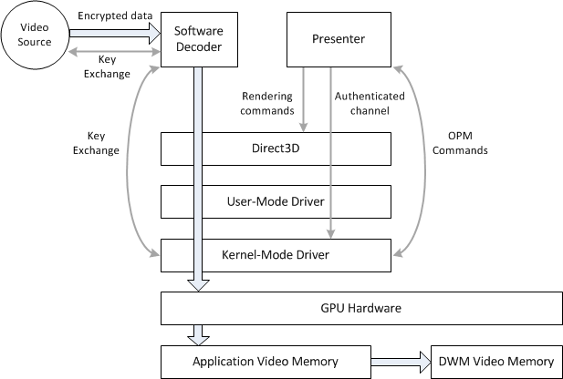
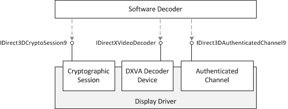

This topic describes video content–protection capabilities that a graphics driver can provide.
The following diagram shows a simplified view of how protected video content travels through the pipeline to be rendered.

[!Note]
The Protected Media Path (PMP) is not depicted in this diagram. The data flow that is shown here might occur within a PMP process, or within an application process.
Â
The decoder receives encrypted, compressed video data from an external source. It is assumed also the decoder also receives a cryptographic key to decrypt this data. This topic does not describe the key exchange between the video source and decoder, but the PMP defines one possible mechanism. The GPU is not involved at this stage.
For hardware-accelerated decoding, the software decoder passes compressed video content to the GPU. To protect this content, the decoder re-encrypts the data, typically using AES-CTR, before passing it to the hardware accelerator. A key-exchange mechanism is defined between the decoder and the graphics driver.
Decoded video frames are stored in video memory, generally in the clear. At this point, the frames are processed and then presented. There are two main options for presentation.
The last step is to display the frame on the monitor, which may require link protection between the graphics card and the display device. An example of link protection is High-Bandwidth Digital Content Protection (HDCP). Link protection is configured using Output Protection Manager (OPM). This topic does not describe OPM; for more information, see Using Output Protection Manager.
During hardware-accelerated decoding, the software decoder must pass compressed video data to the graphics card. For premium content, this data typically must be encrypted, using symmetric-key encryption, before it is sent to the GPU.
To encrypt the video for decoding, the software decoder uses the following interfaces:

All of these interfaces are obtained from the Direct3D11 device, as follows:
| Interface | Creation |
|---|---|
| ID3D11VideoDecoder | Call ID3D11VideoDevice::CreateVideoDecoder. The decoder type is identified by a profile GUID. |
| ID3D11CryptoSession | Call ID3D11VideoDevice::CreateCryptoSession. |
| ID3D11AuthenticatedChannel | Call ID3D11VideoDevice::CreateAuthenticatedChannel. |
Â
[!Note]
To get a pointer to the ID3D11VideoDevice interface, call QueryInterface on ID3D11Device interface.
Â
The authenticated channel provides a trusted communication channel between the software decoder and the driver. The communication channel works as follows:
Here is a high-level overview of the encryption and decoding process:
The software decoder receives a stream of encrypted data from the video source. The decoder decrypts this stream.
The software decoder negotiates a session key with the cryptographic session.
The software decoder uses the authenticated channel to associate the cryptographic session with the decoder device.
The software decoder puts compressed data in buffers that it gets from the decoder device (accelerator). For protected content, the software encoder encrypts the data that is put into the buffers, using the session key for the encryption.
[!Note]
Some drivers use a content key, instead of the session key, for encryption. The content key could change from one frame to the next.
Â
The decoder submits the encrypted compressed buffers to the accelerator. For AES-CTR, the decoder also passes the initialization vector. If a content key is used, the decoder passes the content key, encrypted using the session key.
Direct3D11 has standard support for 128-bit AES-CTR, but is designed to extend to additional encryption types.
The next five sections give more detailed steps.
Before attempting to apply encryption, get the content protection capabilities of the driver.
In particular, look for the following capabilities:
Additional capabilities are indicated in the Caps member.
The next step is to configure the authenticated channel.
Call ID3D11VideoDevice::CreateAuthenticatedChannel to create the authenticated channel. For the ChannelType parameter, specify a channel type that matches the capabilities of the driver.
The CreateAuthenticatedChannel method returns a pointer to the ID3D11AuthenticatedChannel interface.
Call ID3D11AuthenticatedChannel::GetCertificateSize to get the size of the driver's X.509 certificate. Allocate a buffer of the required size.
Call ID3D11AuthenticatedChannel::GetCertificate to get the certificate. The method copies the certificate into the buffer that was allocated in the previous step.
Verify that the driver’s certificate was signed by Microsoft and has not been revoked.
Get the public key from the certificate.
Generate a random RSA session key. This session key is used to sign data that is sent to the authenticated channel. Encrypt the session key using the driver's public key.
Call ID3D11VideoContext::NegotiateAuthenticatedChannelKeyExchange to send the encrypted session key to the driver.
Initialize the secure channel as follows:
Verify the channel type by sending a D3D11_AUTHENTICATED_QUERY_CHANNEL_TYPE query to the authenticated channel, as described in the section Sending Authenticated Channel Queries. Check that the channel type matches what you specified in the CreateAuthenticatedChannel method.
Next, configure the cryptographic session and establish the session key.
Next, associate the decoder device with the Direct3D11 device and the cryptographic session, as follows:
The following diagram illustrates the exchange of handles:
The software decoder can now use the cryptographic session key to encrypt the compressed video buffers. Each compressed buffer will have its own initialization vector (IV) specified in the pIV member of the D3D11_VIDEO_DECODER_BUFFER_DESC structure.
A set of commands are defined for configuring the authenticated channel and setting various content protections. For a list of commands, see Content Protection Commands.
To send a command to the authenticated channel, perform the following steps.
| Member | Description |
|---|---|
| omac | Skip this field for now. |
| ConfigureType | GUID that identifies the command. For a list of commands, see Content Protection Commands. |
| hChannel | The handle to the authenticated channel. |
| SequenceNumber | The sequence number. The first sequence number is specified by sending a D3D11_AUTHENTICATED_CONFIGURE_INITIALIZE command. Each time you send another command, increment this number by 1. The sequence number guards against replay attacks. Note: Two separate sequence numbers are used, one for commands and one for queries. |
A set of queries are defined for retrieving information about the authenticated channel. For a list of queries, see Content Protection Queries.
To send a command to the authenticated channel, perform the following steps.
| Member | Description |
|---|---|
| QueryType | GUID that identifies the query. For a list of queries, see Content Protection Queries. |
| hChannel | The handle to the authenticated channel. |
| SequenceNumber | The sequence number. The first sequence number is specified by sending a D3D11_AUTHENTICATED_CONFIGURE_INITIALIZE command. Each time you send another query, increment this number by 1. The sequence number guards against replay attacks. Note: Two separate sequence numbers are used, one for commands and one for queries. |
Â
Â